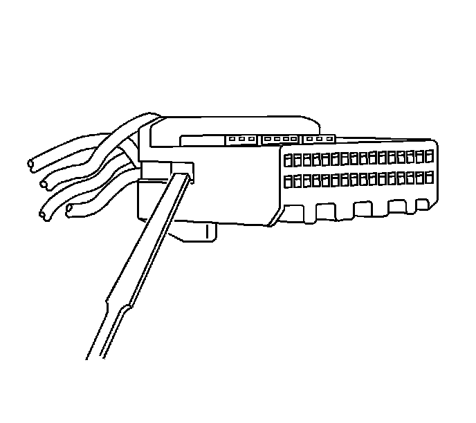
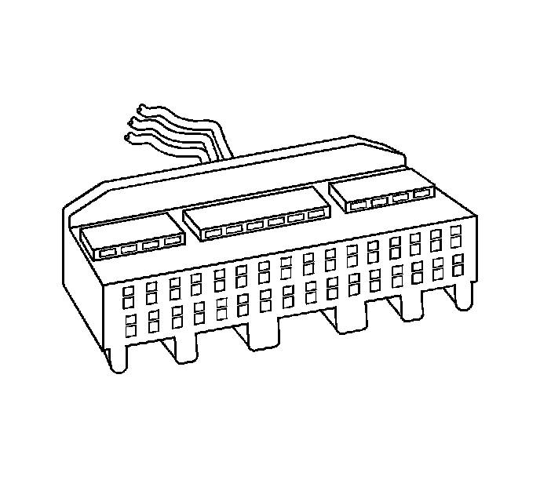
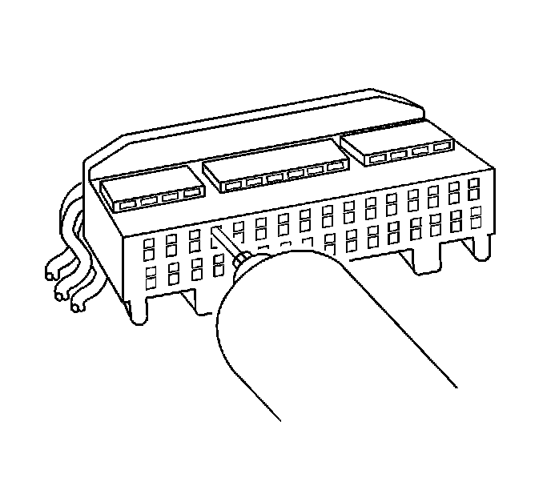

Tyco/AMP Connectors (0.25 Cap)
Tyco/AMP Connectors (0.25 Cap)
Tools Required
J-38125 Terminal Repair Kit
Terminal Removal Procedure
1. Disconnect the connector from the component by pressing down on the connector position assurance (CPA).

2. Use a small flat-bladed tool to release the terminal position assurance (TPA) by inserting the tool in the small recess on the side of the connector and pushing up until the TPA releases from the connector body. The TPA should raise just slightly. Do not try to remove the TPA.
Important: The TPA on this connector cannot be removed unless the terminals are removed first. The TPA will come out of the connector body, but only slightly. When the TPA is slightly raised the terminals can be removed. Using excessive force to remove the TPA with the terminals still in the connector will damage the connector.
3. Repeat the process for the other side of the connector.

4. Ensure that the TPA is in the proper position to remove the terminals.

5. While pushing the terminal forward, insert the J 38125-24 in the release cavity above the terminal you are removing, gently pull the wire out of the back of the connector. Always remember never use force when pulling a terminal out of a connector. See the release tool cross reference in the Reference Guide of the J-38125 to ensure that the correct release tool is used.
Terminal Repair Procedure
Use the appropriate terminal and follow the instructions in the J-38125 in order to replace the terminal.